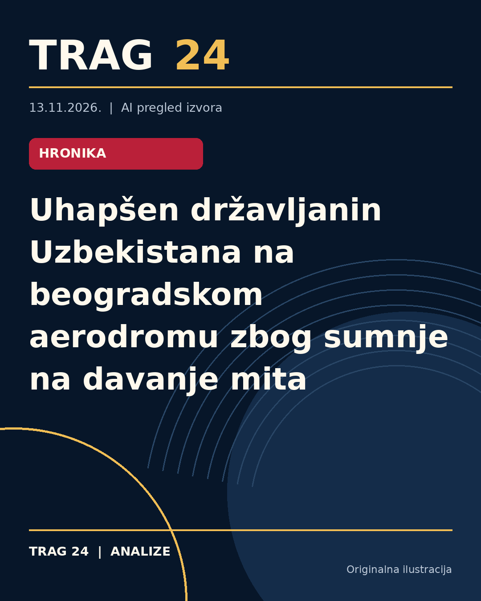

Uhapšen državljanin Uzbekistana na beogradskom aerodromu zbog sumnje na davanje mita

ŠTA SE DOGODILO
Državljanin Uzbekistana S. I. (2005. godište) uhapšen je na beogradskom aerodromu 'Nikola Tesla' zbog sumnje da je prilikom granične kontrole na izlazu iz Srbije ponudio novac policijskom službeniku Uprave granične policije. Osumnjičenom je određeno zadržavanje do 48 sati, a biće sproveden uz krivičnu prijavu nadležnom tužiocu Višeg javnog tužilaštva u Beogradu.
HRONOLOGIJA
Po dostupnim informacijama, hapšenje se dogodilo u okviru redovnih aktivnosti policije na aerodromu 'Nikola Tesla'. Nakon što je osumnjičeni ponudio novac u nameri da spreči izvršenje službene radnje prilikom granične kontrole, policija je reagovala u saradnji sa Službom za borbu protiv korupcije i Uprave krivične policije, po nalogu Posebnog odeljenja za suzbijanje korupcije Višeg javnog tužilaštva u Beogradu. Osoba je zadržana do 48 sati, nakon čega je sprovedena tužiocu.
ŠTA NAVODE IZVORI
Svi izvori navode da je uhapšeni S. I. ponudio novac policijskom službeniku na izlazu iz Srbije na aerodromu 'Nikola Tesla' kako bi sprečio izvršavanje službene radnje koju je službenik morao da izvrši. Izveštaji naglašavaju rad policijskih i tužilačkih organа u suzbijanju korupcije, dok se u nekim tekstovima izdvaja i godina rođenja osumnjičenog (2005) ili njegova starost (21 godina).
ŠTA JE POTVRĐENO
Potvrđeno je da je došlo do hapšenja državljanina Uzbekistana zbog sumnje na davanje mita. Takođe je potvrđeno da je hapšenje sprovedeno u saradnji policijskih jedinica i pod nalogom Višeg javnog tužilaštva u Beogradu, te da osumnjičenom predstoji saslušanje uz određeno zadržavanje do 48 sati.
ŠTA NIJE POTVRĐENO
Nije potvrđeno da je osumnjičeni izvršio bilo kakvu drugu radnju osim navedenog pokušaja davanja mita. Takođe, nema informacija o daljem toku istrage niti o ishodu eventualnog sudskog postupka.
ŠTA OSTАJE OTVORENO: Ostaje nepoznato da li je u pitanju pojedinačni događaj ili postoji širi kontekst u kojem se ovaj slučaj dogodio. Takođe nije poznato kako će se pravno dalje odvijati slučaj i da li će biti dodatnih optužbi ili hapšenja.
Izvori
- https://www.danas.rs/vesti/drustvo/uzbekistanac-uhapsen-na-beogradskom-aerodromu-zbog-sumnje-na-davanje-mita/
- https://n1info.rs/vesti/uhapsen-uzbekistanac-na-aerodromu-zbog-davanja-mita/
- https://www.telegraf.rs/vesti/hronika/4432228-greska-koja-ga-je-kostala-slobode-stranac-21-na-beogradskom-aerodromu-ponudio-novac-policajcu-uhapsen-je
Ova analiza je pripremljena uz pomoć veštačke inteligencije na osnovu javno dostupnih izvora. Navodi izvora nisu nužno nezavisno potvrđeni.